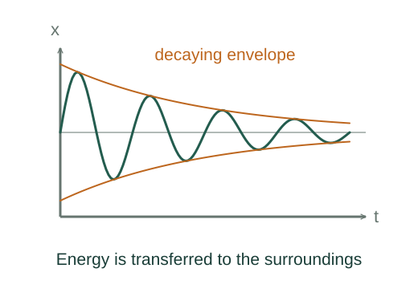

Derive damped oscillations and resonance
Add spring, damping and optional sinusoidal driving forces.
What the symbols mean
b: linear damping coefficient; F₀,ωd: sinusoidal drive amplitude and frequency; A: displacement envelope scale.
When this applies
Linear restoring force −kx and linear drag −bẋ. The oscillatory free solution needs b² < 4mk.
Developing the argument

Write the force equation
Add spring, damping and optional sinusoidal driving forces.
Solve the undriven characteristic equation
For x ∝ exp(st), the equation becomes ms² + bs + k = 0. Its underdamped roots are a negative real part plus conjugate imaginary parts.
Convert complex exponentials to real motion
The real solution is a sinusoid multiplied by the decaying envelope. Weak-damping cycle-averaged energy scales as the square of that envelope.
Solve for the driven amplitude
Insert a sinusoidal steady response and combine in-phase and quadrature force terms. The velocity amplitude is ωd times the displacement amplitude.
Locate resonance precisely
Dividing the squared velocity-amplitude denominator by ωd² shows it is minimized when k/ωd − mωd = 0. Displacement resonance is slightly lower when it exists.
A worked example
If b/(2m) = 1 s⁻¹, the free amplitude envelope decreases by a factor e in one second.
Derivation behind this calculation ↗A point to keep straight
Amplitude-squared energy decay is a cycle-average weak-damping statement, not an exact instantaneous sinusoid-free expression.
Check the assumptions and derivation ↗